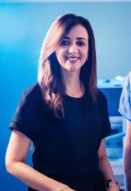

4D surgeon capture
A volumetric camera ring at the 830N Stabile studio records surgical performance in three dimensions over time. The result is high-dimensional data, not just video.
Mayo Clinic · Jacksonville, Florida
Simulation · Telemedicine · Robotics · eXperimental education
Explore ASTRALMission
STR-X brings simulation, telemedicine and robotics to rural, remote, underserved, austere and extreme (RRU-AE) environments. That reaches from community hospitals to field medicine, and on to pathways for spaceflight.
Flagship program
AI Surgical Tele-Robotic Laboratory
Funded by a Richard M. Schulze Innovation Award in Artificial Intelligence, ASTRAL records how master surgeons move, operate and decide. It turns that capture into simulation, robot training and, eventually, telerobotic surgery.
A volumetric camera ring at the 830N Stabile studio records surgical performance in three dimensions over time. The result is high-dimensional data, not just video.
Captured motion is replayed and rehearsed in physics simulators and world models, including MuJoCo, NVIDIA Isaac Lab and NVIDIA Cosmos.
Robotic arms learn and practice on 3D-printed and synthetic organ models before any clinical use.
The long-term goal: an expert guiding robotic tools from a distance, with AI stabilization, to bring surgical skill where it is scarce.
Global network
Leadership

Train with us
A 12-month Mayo Clinic fellowship in Jacksonville in simulation, telemedicine, robotics and experimental education. Fellows work on telerobotics, haptics and immersive AR/VR learning, and design projects that address gaps in global health care.
View the fellowship
Follow the work
@str_xlabs
Behind the scenes from the studio, the simulation lab and our global sites.
Instagram Contact